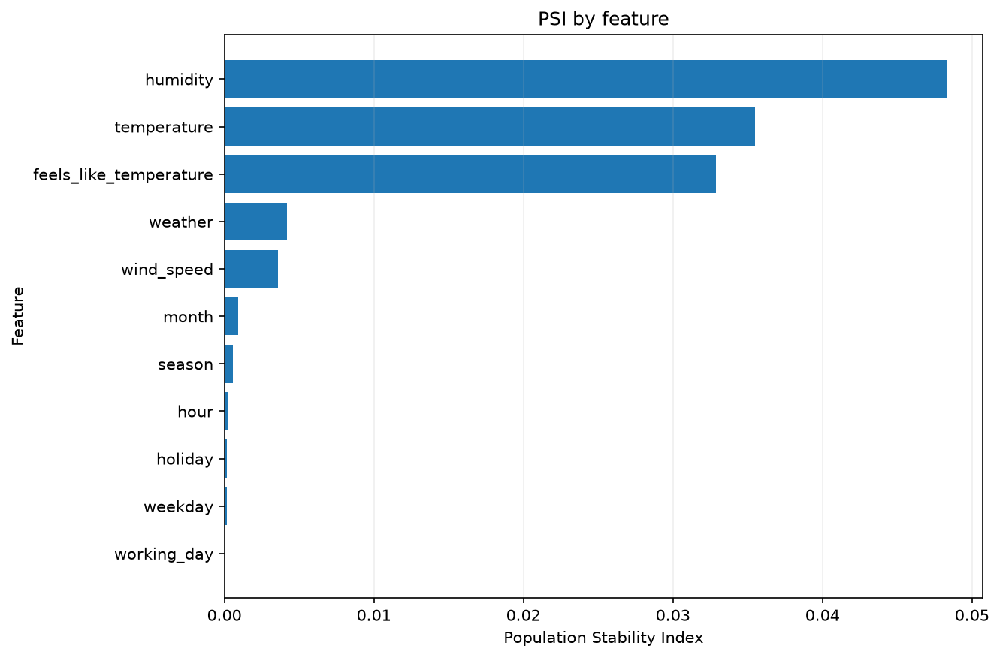
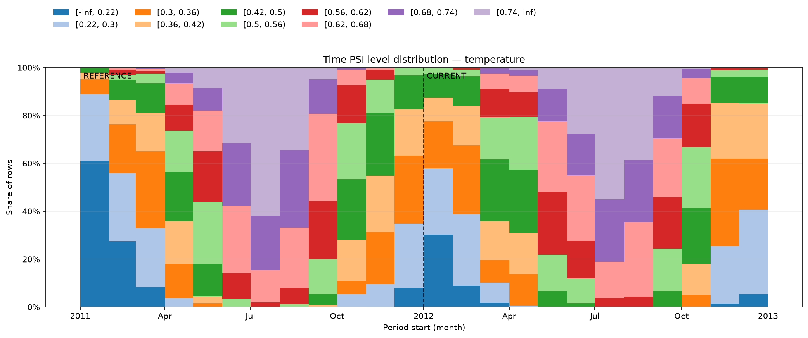

PSI and feature levels¶
Part of Data analysis, Population Stability Index (PSI) measures how feature distributions change between a reference sample and a current sample. Fit categories and numerical bins on the reference once, then reuse them for every comparison.
Compare two samples¶
This small calculation makes the level counts easy to inspect; four rows per sample are not enough to establish population drift. For monitoring real observations, see the recorded-hour comparison.
import polars as pl
from ml_toolkit.config import FeatureLevelConfig
from ml_toolkit.psi import PSIAnalysis, PSIConfig
reference = pl.DataFrame(
{"age": [20, 30, 40, 50], "region": ["north", "north", "south", "south"]}
)
current = pl.DataFrame(
{"age": [45, 55, 65, 75], "region": ["north", "south", "west", "west"]}
)
analysis = PSIAnalysis(
PSIConfig(
features=(
FeatureLevelConfig("age", "numerical", lower_bound=0),
FeatureLevelConfig("region", "categorical"),
),
n_bins=2,
)
).fit(reference)
comparison = analysis.compare(current)
print(
comparison.psi.sort("feature")
.with_columns(pl.col("psi").round(4))
.write_csv(),
end="",
)
region_shares = (
comparison.level_distribution.filter(
(pl.col("feature") == "region") & (pl.col("level") != "__NULL__")
)
.select("level", "sample", "share")
.pivot(on="sample", index="level", values="share")
)
print(region_shares.write_csv(), end="")
feature,psi
age,6.9077
region,6.9077
level,reference,current
north,0.5,0.25
south,0.5,0.25
__UNSEEN__,0.0,0.5
comparison.psi has one score per feature. Larger values mean a greater change
in fitted-level shares. level_distribution shows the reference/current counts
and shares behind each score. The new "west" category uses the fitted unseen
level; numerical bins retain the reference boundaries. Here north and south
each fall from 50% to 25%, and unseen categories account for 50% of current
rows. Empty levels make the score sensitive to the configured epsilon share
floor; this value is an arithmetic demonstration, not a universal alert threshold.
Call analysis.compare(next_sample) for later batches. Re-fitting on each batch
would change the reference. For temporal distributions, set PSIConfig(period="week") (default "month")
and provide aligned
Date/Datetime timestamps with time= in both fit and compare.
The original ranges must satisfy max(reference_time) <= min(current_time).
Equal endpoints are allowed; overlap beyond the shared endpoint and reversed
ranges raise ValueError. The split
may fall inside one grouping period. Comparisons without timestamps do not
have this restriction.
Reuse feature levels¶
LevelTransformer exposes the same fit/transform operations when you need
consistent bins for another report. Continue with reference and current
above to transform both samples and compare their existing levels:
FeatureLevelConfig supplies the rules for each column. fit(reference)
determines categories or numerical intervals from the reference sample;
it does not train a prediction model. The resulting feature_levels tuple
contains one FeatureLevels per configured column, in the same order.
Each result holds its original rules in config, its labels in levels,
and its numerical boundaries or categorical categories.
from ml_toolkit.feature_levels import LevelTransformer
from ml_toolkit.psi import compare_psi
levels = LevelTransformer(analysis.config.features, n_bins=2).fit(reference)
reference_levels = levels.transform(reference)
current_levels = levels.transform(current)
assert levels.feature_levels is not None
level_comparison = compare_psi(
reference_levels, current_levels, feature_levels=levels.feature_levels
)
print("Age boundaries:", levels.feature_levels[0].boundaries)
print(
"Current region levels:", current_levels["region"].cast(pl.String).to_list()
)
print("Same PSI scores:", level_comparison.psi.equals(comparison.psi))
Age boundaries: (35.0,)
Current region levels: ['north', 'south', '__UNSEEN__', '__UNSEEN__']
Same PSI scores: True
Configured columns become Polars Categorical columns; other columns retain
their values and order. Reuse the fitted transformer for subsequent samples.
Calling fit again replaces its levels; previously returned comparison results
retain their original immutable rules and levels.
How PSI and observed/fitted share levels¶
During training, PSI and ObservedFitted receive the same
ReportingConfig.features rules and ReportingConfig.n_bins. Each report
uses levels fitted on the same training rows for that fit. PSI reuses the fitted
transformer from the model's baseline when that model is being saved;
ObservedFitted creates its own transformer. PSI and observed/fitted do not
share a fitted transformer with each other.
The same rules, bin count and reference data produce identical categories and
numerical boundaries for matching features. Identical configuration alone is
insufficient when the reference data differs. ObservedFitted(features=...)
can select a subset of the shared feature definitions without changing how
those features are binned.
Each report applies its training-fitted levels to both train and validation/test rows. Held-out rows do not influence the learned levels. Every enabled fit learns levels afresh from its own training rows, so boundaries can differ across folds and the final fit. See the observed/fitted guide for the corresponding prediction report.
Compare recorded weather and calendar features¶
Prepare the Bike Sharing cache. These figures fit levels on 2011 training hours and compare 2012 test hours. Calendar changes can be expected; PSI measures distribution differences, not their cause. Shares count rows, independent of model weights.
from pathlib import Path
import polars as pl
from examples.gallery_data import load_bike_pool
from ml_toolkit.training import Holdout
from ml_toolkit.config import FigureConfig
data = load_bike_pool(download_if_missing=False)
partition = Holdout(data, test_size="2012-01-01").get_test()
train, test = partition.train, partition.heldout
assert test is not None
output = Path("figures")
figure = FigureConfig(dpi=150)
print(f"2011 train hours: {len(train)}; 2012 test hours: {len(test)}")
2011 train hours: 8645; 2012 test hours: 8734
from ml_toolkit.plots import psi
categorical_features = {
"hour",
"working_day",
"weekday",
"holiday",
"season",
"weather",
"month",
}
weather_analysis = PSIAnalysis(
PSIConfig(
features=tuple(
FeatureLevelConfig(
name,
"categorical" if name in categorical_features else "numerical",
)
for name in train.X.columns
),
n_bins=10,
)
).fit(train.X, time=train.time)
weather_comparison = weather_analysis.compare(test.X, time=test.time)
psi.feature_psi_plot(
weather_comparison.psi, output / "psi-scores.png", figure=figure
)
print(
weather_comparison.psi.sort("psi", descending=True)
.head(5)
.with_columns(pl.col("psi").round(3))
.write_csv(),
end="",
)
feature,psi
humidity,0.048
temperature,0.036
feels_like_temperature,0.033
weather,0.004
wind_speed,0.004

The bars show one PSI score per feature. Inspect its level shares to understand which values contribute to the difference; a universal alert cutoff is not implied by this illustration.
psi.time_psi_level_distribution(
weather_comparison.time_distribution,
"temperature",
output / "psi-time.png",
figure=figure,
)

Each bar shows period-specific shares on the fitted levels. The dashed boundary
marks the first current bar. When the split falls inside a period, that period
has two equal-width bars, reference then current; the separator marks their
visual boundary, not the exact split date. Entirely missing periods stay empty.
Both plotting calls return None; their tables come from PSIAnalysis.
Enable PSI during training¶
from ml_toolkit.config import ReportingConfig
reporting = ReportingConfig(
psi=True, features=weather_analysis.config.features, n_bins=10
)
Pass this reporting config to TrainingConfig(reporting=reporting). The
workflow compares train with the current held-out sample, writes psi/scores.png
and per-feature time distributions, and saves the score and distribution tables
as JSON. PSI uses feature values and timestamps only; no predictions are
passed to the analysis. A train-only fit has no PSI report. features=None infers feature
rules; features=() disables feature diagnostics. epsilon is the PSI share
floor, and period sets temporal grouping. Scheduling and shared figure settings
are described in the data analysis overview.
Persist a reference for monitoring¶
PSIBaseline stores fitted feature rules and aggregate counts rather than
retaining a row-level reference frame. Continue with the small reference and
current samples above to save and reload it locally without MLflow:
from tempfile import TemporaryDirectory
from polars.testing import assert_frame_equal
from ml_toolkit.psi import PSIBaseline
baseline = PSIBaseline.from_reference(
reference, config=analysis.config
)
with TemporaryDirectory() as directory:
baseline.save(directory)
restored = PSIBaseline.load(directory)
result = restored.compare(current)
assert_frame_equal(result.psi, comparison.psi)
assert_frame_equal(result.level_distribution, comparison.level_distribution)
Numerical boundaries, typed categories, missing/error sentinels and feature order
survive serialization. LevelTransformer.to_dict() and from_dict() also expose
the fitted transformation state separately. Loading does not refit any levels.
compare returns the existing PSIResult with feature scores and reference/current
distributions. Counts are unweighted, and epsilon floors shares independently
without renormalization, exactly as in PSIAnalysis. The batch must be nonempty
and contain all configured features; extra columns are allowed.
time= in from_reference records the reference date range as metadata.
The baseline's time_distribution is empty: compare each incoming monitoring
window separately against the same fixed reference. Existing temporal reports
in PSIAnalysis and training remain available.
During training, enabled PSI is bundled automatically with saved models. See loading a model's baseline.
API reference¶
Import PSI analysis from ml_toolkit.psi.
Drift analysis¶
PSIAnalysis
dataclass
¶
PSIAnalysis(config: PSIConfig)
Compare a current population against fitted reference feature levels.
Parameters:
| Name | Type | Description | Default |
|---|---|---|---|
config
|
PSIConfig
|
Feature definitions, numerical bin count, and share floor. |
required |
Attributes:
| Name | Type | Description |
|---|---|---|
transformer |
LevelTransformer
|
Transformer learning levels from reference data. |
reference_levels |
DataFrame or None
|
Transformed reference frame; None before fitting. |
reference_time |
Series or None
|
Optional reference timestamps for time-based distributions. |
Examples:
In this small calculation, the north share falls from 75% to 25%.
>>> import polars as pl
>>> from ml_toolkit.feature_levels import FeatureLevelConfig
>>> from ml_toolkit.psi import PSIAnalysis, PSIConfig
>>> reference = pl.DataFrame({"segment": ["north"] * 3 + ["south"]})
>>> current = pl.DataFrame({"segment": ["north"] + ["south"] * 3})
>>> analysis = PSIAnalysis(PSIConfig((FeatureLevelConfig("segment", "categorical"),)))
>>> result = analysis.fit(reference).compare(current)
>>> result.psi.select(pl.col("psi").round(4)).to_dicts()
[{'psi': 1.0986}]
>>> result.level_distribution.filter(pl.col("level") == "north").select(
... "sample", "share"
... ).to_dicts()
[{'sample': 'reference', 'share': 0.75}, {'sample': 'current', 'share': 0.25}]
fit ¶
fit(
reference: DataFrame,
*,
time: Series | str | None = None
) -> PSIAnalysis
Learn feature levels from reference data and optionally record dates.
Parameters:
| Name | Type | Description | Default |
|---|---|---|---|
reference
|
DataFrame
|
Reference frame containing all configured features. An empty typed frame can be fitted, but comparison requires a nonempty reference. |
required |
time
|
polars.Series, str, or None
|
Optional non-null Date/Datetime Series aligned with rows, or the name of a timestamp column. Provide time for both samples or neither. Current timestamps must all be at or after the latest reference timestamp; a split inside one grouping period is allowed. |
None
|
Returns:
| Type | Description |
|---|---|
Self
|
Analysis with stored reference levels and optional timestamps. |
Raises:
| Type | Description |
|---|---|
ValueError
|
Features are missing, or supplied timestamps are null or misaligned. |
TypeError
|
Supplied timestamps are not Date or Datetime. |
compare ¶
compare(
current: DataFrame, *, time: Series | str | None = None
) -> PSIResult
Score current data using the fitted reference levels.
Parameters:
| Name | Type | Description | Default |
|---|---|---|---|
current
|
DataFrame
|
Nonempty current frame containing all configured features. |
required |
time
|
polars.Series, str, or None
|
Optional non-null Date/Datetime Series aligned with rows, or the name of a timestamp column. Provide time for both samples or neither. |
None
|
Returns:
| Type | Description |
|---|---|
PSIResult
|
Per-feature PSI, level shares for both samples, optional time-based shares, and fitted level definitions. |
Raises:
| Type | Description |
|---|---|
RuntimeError
|
The analysis has not been fitted. |
ValueError
|
Data is empty, required features are missing, timestamps are invalid, only one sample supplies time, or max(reference_time) exceeds min(current_time). Shared endpoints and a split inside one period are allowed. |
PSIBaseline
dataclass
¶
PSIBaseline(
transformer: LevelTransformer,
reference_counts: DataFrame,
metadata: dict[str, object],
)
A fitted transformer and unweighted reference counts, without source rows.
Use from_reference to fit, save/load for local persistence, and
compare for each monitoring window. Time metadata describes the reference;
comparisons return an empty time_distribution rather than refitting levels.
from_reference
classmethod
¶
from_reference(
reference: DataFrame,
*,
config: PSIConfig,
time: Series | None = None,
stage: str | None = None
) -> PSIBaseline
Fit on all reference rows; weights and serving-example limits do not apply.
save ¶
save(directory: str | Path) -> None
Write a versioned three-file baseline, preserving exact fitted state.
load
classmethod
¶
load(directory: str | Path) -> PSIBaseline
Restore and validate an aggregate baseline without fitting or source data.
compare ¶
compare(current: DataFrame) -> PSIResult
Compare a nonempty batch against fixed levels and reference frequencies.
compare_psi ¶
compare_psi(
reference_levels: DataFrame,
current_levels: DataFrame,
feature_levels: tuple[FeatureLevels, ...],
*,
epsilon: float = 1e-06,
period: TimePeriod = "month",
reference_time: Series | None = None,
current_time: Series | None = None
) -> PSIResult
Compare populations already transformed using shared reference levels.
Parameters:
| Name | Type | Description | Default |
|---|---|---|---|
reference_levels
|
DataFrame
|
Nonempty frames with the configured columns transformed by the same LevelTransformer. Extra columns are ignored. |
required |
current_levels
|
DataFrame
|
Nonempty frames with the configured columns transformed by the same LevelTransformer. Extra columns are ignored. |
required |
feature_levels
|
tuple[FeatureLevels, ...]
|
Fitted definitions, including the order of features and levels. |
required |
period
|
TimePeriod
|
Calendar grouping in the input timezone. Both time zones must match; minute/hour require Datetime. Missing periods are not filled. |
"month"
|
epsilon
|
float
|
Share floor strictly between zero and one for PSI logarithms. |
1e-6
|
reference_time
|
Series or None
|
Aligned, non-null Date/Datetime values. Supply both to include time-based distributions, or neither. max(reference_time) must be less than or equal to min(current_time); a split inside one grouping period is allowed. |
None
|
current_time
|
Series or None
|
Aligned, non-null Date/Datetime values. Supply both to include time-based distributions, or neither. max(reference_time) must be less than or equal to min(current_time); a split inside one grouping period is allowed. |
None
|
Returns:
| Type | Description |
|---|---|
PSIResult
|
Per-feature scores, level distributions, optional time-based distributions, and the supplied fitted definitions. No levels are fitted here. |
Raises:
| Type | Description |
|---|---|
ValueError
|
Frames or feature definitions are empty, configured columns or levels are missing or invalid, timestamps are misaligned, max(reference_time) exceeds min(current_time), or epsilon is invalid. |
TypeError
|
Feature columns are not Categorical or timestamps have an invalid dtype. |
Configuration and results¶
PSIConfig
dataclass
¶
PSIConfig(
features: tuple[FeatureLevelConfig, ...],
period: TimePeriod = "month",
n_bins: int = 10,
epsilon: float = 1e-06,
)
Configure reference-based population stability analysis.
Parameters:
| Name | Type | Description | Default |
|---|---|---|---|
features
|
tuple[FeatureLevelConfig, ...]
|
Nonempty collection of uniquely named feature definitions, normalized to a tuple. |
required |
period
|
TimePeriod
|
Calendar period for temporal distributions, preserving the input timezone. |
"month"
|
n_bins
|
int
|
Positive requested number of numerical quantile bins. Ties and constant features may produce fewer bins. |
10
|
epsilon
|
float
|
Share floor strictly between zero and one, applied before logarithms. |
1e-6
|
PSIResult
dataclass
¶
PSIResult(
psi: DataFrame,
level_distribution: DataFrame,
time_distribution: DataFrame,
feature_levels: tuple[FeatureLevels, ...],
)
Store PSI scores and distribution tables as Polars DataFrames.
Attributes:
| Name | Type | Description |
|---|---|---|
psi |
DataFrame
|
One row per feature with feature (String) and psi (Float64) columns. |
level_distribution |
DataFrame
|
Columns feature, sample, and level (String), rows (Int64), and share (Float64). Samples are reference and current; every fitted level is present, including zero-share levels. |
time_distribution |
DataFrame
|
Columns feature, sample, and level (String), period_start (Datetime), and share (Float64). Contains every fitted level in each observed sample period; preserves the input timezone. Empty with naive Datetime when time was omitted. |
feature_levels |
tuple[FeatureLevels, ...]
|
Reference-fitted categories, interval boundaries, and special level definitions. |
Discrete-series comparison¶
psi ¶
psi(
reference: Series,
current: Series,
*,
epsilon: float = 1e-06
) -> float
Calculate PSI for two categorical feature distributions.
Parameters:
| Name | Type | Description | Default |
|---|---|---|---|
reference
|
Series
|
Nonempty Series of discrete reference levels, compared after casting to String. Bin continuous numerical values before calling. |
required |
current
|
Series
|
Nonempty Series of discrete current levels, compared after casting to String; sample sizes may differ. Null is counted as a separate level. |
required |
epsilon
|
float
|
Minimum share strictly between zero and one used to avoid logarithms of zero. |
1e-6
|
Returns:
| Type | Description |
|---|---|
float
|
Sum of (current_share - reference_share) * log(current_share / reference_share) over the union of observed levels. |
Raises:
| Type | Description |
|---|---|
ValueError
|
Either sample is empty or epsilon is invalid. |
Notes
Shares are floored independently without renormalization. Use LevelTransformer or PSIAnalysis to bin raw numerical values first.
Examples:
Compare category shares: north falls from 75% to 25%, while south rises.
>>> import polars as pl
>>> from ml_toolkit.psi import psi
>>> reference = pl.Series(["north"] * 3 + ["south"], dtype=pl.Categorical)
>>> current = pl.Series(["north"] + ["south"] * 3, dtype=pl.Categorical)
>>> round(psi(reference, current), 4)
1.0986
Reference-fitted feature levels¶
Import these lower-level types from ml_toolkit.feature_levels.
FeatureLevelConfig is also exported from ml_toolkit.config and documented in the
configuration reference.
LevelTransformer
dataclass
¶
LevelTransformer(
features: Sequence[FeatureLevelConfig], n_bins: int = 10
)
Learn reference categories and quantile boundaries for diagnostics.
Parameters:
| Name | Type | Description | Default |
|---|---|---|---|
features
|
sequence of FeatureLevelConfig
|
Feature definitions with unique names; stored as a tuple. |
required |
n_bins
|
int
|
Positive requested number of numerical intervals. |
10
|
Attributes:
| Name | Type | Description |
|---|---|---|
feature_levels |
tuple[FeatureLevels, ...] or None
|
Levels in feature order; None until fit is called. |
Notes
Numerical ties can reduce the number of quantile boundaries. Nulls, floating NaNs, and configured missing sentinels map to NULL. Categorical values absent from the reference map to UNSEEN; configured error sentinels and out-of-bound numerical values map to ERROR. Transformation retains unconfigured columns.
fit ¶
fit(reference: DataFrame) -> LevelTransformer
Learn levels and numerical boundaries from reference data.
Parameters:
| Name | Type | Description | Default |
|---|---|---|---|
reference
|
DataFrame
|
Frame containing every configured feature. Regular numerical values must be finite and castable to Float64. |
required |
Returns:
| Type | Description |
|---|---|
Self
|
Transformer with reference-based levels. Calling fit again replaces its levels; previously returned tuples retain their original values. |
Raises:
| Type | Description |
|---|---|
ValueError
|
Features are missing, regular numerical values are non-finite, or categories use reserved level names. |
Notes
An empty frame must still supply typed feature columns. Features with no regular reference values learn no categories or numerical cut points.
transform ¶
transform(data: DataFrame) -> pl.DataFrame
Replace configured features with fitted categorical level labels.
Parameters:
| Name | Type | Description | Default |
|---|---|---|---|
data
|
DataFrame
|
Frame containing the configured features; may have zero rows. |
required |
Returns:
| Type | Description |
|---|---|
DataFrame
|
Frame with configured columns cast to Categorical; unconfigured columns and row order are retained. |
Raises:
| Type | Description |
|---|---|
RuntimeError
|
The transformer has not been fitted. |
ValueError
|
Configured features are missing. |
Notes
Numerical intervals are left-inclusive. A value equal to an internal boundary enters the interval on its right.
to_dict ¶
to_dict() -> dict[str, object]
Serialize fitted state without rounding boundaries or losing scalar types.
from_dict
classmethod
¶
from_dict(payload: object) -> LevelTransformer
Restore validated fitted state; never refit on new observations.
Level definitions¶
FeatureLevels
dataclass
¶
FeatureLevels(
config: FeatureLevelConfig,
levels: tuple[str, ...],
boundaries: tuple[float, ...] = (),
categories: tuple[FeatureScalar, ...] = (),
)
Store categories and intervals determined from reference data.
Attributes:
| Name | Type | Description |
|---|---|---|
config |
FeatureLevelConfig
|
Immutable rules used to determine and apply these levels. |
levels |
tuple[str, ...]
|
Ordered interval or category labels followed by applicable special levels. |
boundaries |
tuple[float, ...]
|
Internal numerical cut points; empty for categorical or single-interval features. |
categories |
tuple[FeatureScalar, ...]
|
Reference categories in first-occurrence order; empty for numerical features. |
FeatureType identifies numerical and categorical features. FeatureScalar
describes the values retained by learned levels. NULL_LEVEL, ERROR_LEVEL,
and UNSEEN_LEVEL are the default missing, invalid, and unseen-category labels.
PSI plots¶
psi ¶
PSI score and time-based level-distribution figures.
feature_psi_plot ¶
feature_psi_plot(
scores: DataFrame,
save_fig: Path,
*,
figure: FigureConfig | None = None
) -> None
Save a horizontal bar chart of PSI values by feature.
Parameters:
| Name | Type | Description | Default |
|---|---|---|---|
scores
|
DataFrame
|
Nonempty frame with feature and finite psi columns, such as PSIResult.psi. |
required |
save_fig
|
Path
|
Output figure path; pass a Path object, not a string. |
required |
figure
|
FigureConfig or None
|
Optional export dimensions, DPI, and format. None preserves native dimensions and the requested path format. |
None
|
Returns:
| Type | Description |
|---|---|
None
|
The figure is saved to disk; no table is returned. |
Raises:
| Type | Description |
|---|---|
ValueError
|
Required columns are missing, scores are empty, or PSI values are non-finite. |
Notes
Creates parent directories for save_fig and closes the figure after saving.
time_psi_level_distribution ¶
time_psi_level_distribution(
distribution: DataFrame,
feature: str,
save_fig: Path,
*,
period: TimePeriod = "month",
figure: FigureConfig | None = None
) -> None
Save time-based fitted-level shares as stacked bars at calendar-period starts.
Parameters:
| Name | Type | Description | Default |
|---|---|---|---|
distribution
|
DataFrame
|
Time share table with feature, period_start, sample, level, and share columns, such as PSIResult.time_distribution. Reference must precede current; only their boundary period may be shared. |
required |
feature
|
str
|
Feature name present in the distribution table. |
required |
save_fig
|
Path
|
Output figure path; pass a Path object, not a string. |
required |
period
|
TimePeriod
|
Period used to build the table; determines calendar bar widths. |
"month"
|
figure
|
FigureConfig or None
|
Optional export dimensions, DPI, and format. None preserves native dimensions and the requested path format. |
None
|
Returns:
| Type | Description |
|---|---|
None
|
The figure is saved to disk; no table is returned. |
Raises:
| Type | Description |
|---|---|
ValueError
|
Required columns or the requested feature are missing, or reference periods extend beyond the first current period. |
Notes
Creates parent directories for save_fig and closes the figure after saving. Samples share one calendar axis, with a boundary at the first current bar. Missing periods remain empty. A shared boundary period is split into two equal-width bars, reference then current. This is a display convention, not the exact timestamp of the split. PSIAnalysis and compare_psi validate the original time ranges before aggregation; a manually prepared table must satisfy the same constraint, which period starts alone cannot verify.